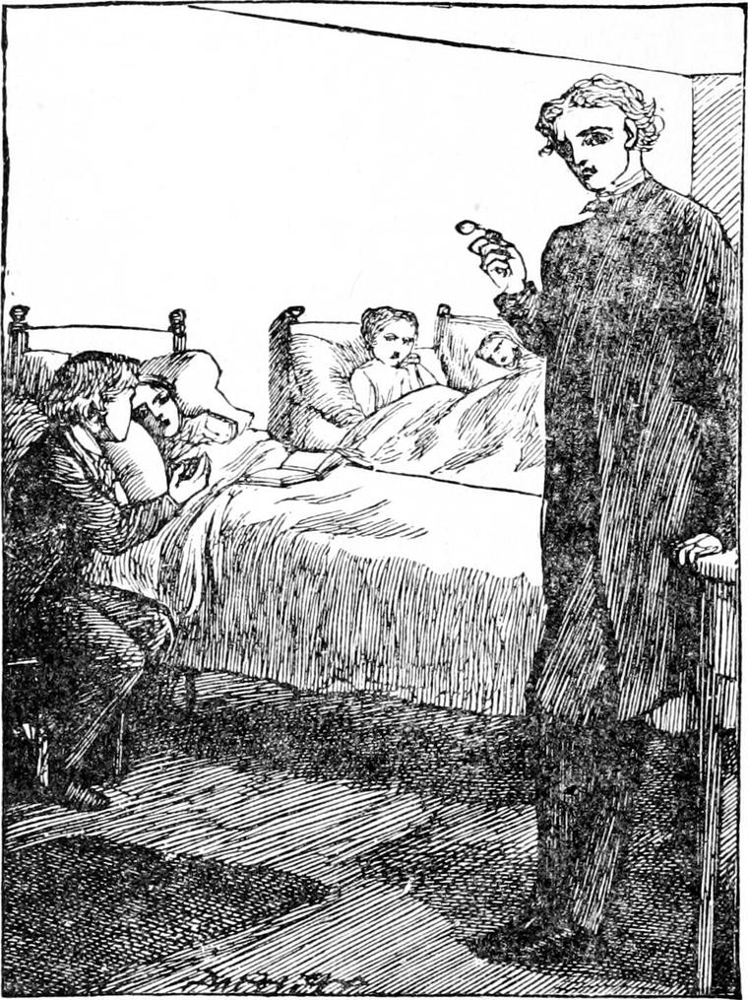

THE first day his father resumed his work, Diamond went with him as usual. In the afternoon, however, his father, having taken a fare to the neighbourhood, went home, and Diamond drove the cab the rest of the day. It was hard for old Diamond to do all the work, but they could not afford to have another horse. They contrived to save him as much as possible, and fed him well, and he did bravely.
The next morning his father was so much stronger that Diamond thought he might go and ask Mr. Raymond to take him to see Nanny. He found him at home. His servant had grown friendly by this time, and showed him in without any cross-questioning. Mr. Raymond received him with his usual kindness, consented at once, and walked with him to the Hospital, which was close at hand. It was a comfortable old-fashioned house, built in the reign of Queen Anne, and in her day, no doubt, inhabited by rich and fashionable people: now it was a home for poor sick children, who were carefully tended for love's sake. There are regions in London where a hospital in every other street might be full of such children, whose fathers and mothers are dead, or unable to take care of them.
When Diamond followed Mr. Raymond into the room where those children who had got over the worst of their illness and were growing better lay, he saw a number of little iron bedsteads, with their heads to the walls, and in every one of them a child, whose face was a story in itself. In some, health had begun to appear in a tinge upon the cheeks, and a doubtful brightness in the eyes, just as out of the cold dreary winter the spring comes in blushing buds and bright crocuses. In others there were more of the signs of winter left. Their faces reminded you of snow and keen cutting winds, more than of sunshine and soft breezes and butterflies; but even in them the signs of suffering told that the suffering was less, and that if the spring-time had but arrived, it had yet arrived.
Diamond looked all round, but could see no Nanny. He turned to Mr. Raymond with a question in his eyes.
“Well?” said Mr. Raymond.
“Nanny's not here,” said Diamond.
“Oh, yes, she is.”
“I don't see her.”
“I do, though. There she is.”
He pointed to a bed right in front of where Diamond was standing.
“That's not Nanny,” he said.
“It is Nanny. I have seen her many times since you have. Illness makes a great difference.”
“Why, that girl must have been to the back of the north wind!” thought Diamond, but he said nothing, only stared; and as he stared, something of the old Nanny began to dawn through the face of the new Nanny. The old Nanny, though a good girl, and a friendly girl, had been rough, blunt in her speech, and dirty in her person. Her face would always have reminded one who had already been to the back of the north wind of something he had seen in the best of company, but it had been coarse notwithstanding, partly from the weather, partly from her living amongst low people, and partly from having to defend herself: now it was so sweet, and gentle, and refined, that she might have had a lady and gentleman for a father and mother. And Diamond could not help thinking of words which he had heard in the church the day before: “Surely it is good to be afflicted;” or something like that. North Wind, somehow or other, must have had to do with her! She had grown from a rough girl into a gentle maiden.
Mr. Raymond, however, was not surprised, for he was used to see such lovely changes—something like the change which passes upon the crawling, many-footed creature, when it turns sick and ill, and revives a butterfly, with two wings instead of many feet. Instead of her having to take care of herself, kind hands ministered to her, making her comfortable and sweet and clean, soothing her aching head, and giving her cooling drink when she was thirsty; and kind eyes, the stars of the kingdom of heaven, had shone upon her; so that, what with the fire of the fever and the dew of tenderness, that which was coarse in her had melted away, and her whole face had grown so refined and sweet that Diamond did not know her. But as he gazed, the best of the old face, all the true and good part of it, that which was Nanny herself, dawned upon him, like the moon coming out of a cloud, until at length, instead of only believing Mr. Raymond that this was she, he saw for himself that it was Nanny indeed—very worn but grown beautiful.

He went up to her. She smiled. He had heard her laugh, but had never seen her smile before.
“Nanny, do you know me?” said Diamond.
She only smiled again, as if the question was amusing.
She was not likely to forget him; for although she did not yet know it was he who had got her there, she had dreamed of him often, and had talked much about him when delirious. Nor was it much wonder, for he was the only boy except Joe who had ever shown her kindness.
Meantime Mr. Raymond was going from bed to bed, talking to the little people. Every one knew him, and every one was eager to have a look, and a smile, and a kind word from him.
Diamond sat down on a stool at the head of Nanny's bed. She laid her hand in his. No one else of her old acquaintance had been near her.
Suddenly a little voice called aloud—
“Won't Mr. Raymond tell us a story?”
“Oh, yes, please do! please do!” cried several little voices which also were stronger than the rest. For Mr. Raymond was in the habit of telling them a story when he went to see them, and they enjoyed it far more than the other nice things which the doctor permitted him to give them.
“Very well,” said Mr. Raymond, “I will. What sort of a story shall it be?”
“A true story,” said one little girl.
“A fairy tale,” said a little boy.
“Well,” said Mr. Raymond, “I suppose, as there is a difference, I may choose. I can't think of any true story just at this moment, so I will tell you a sort of a fairy one.”
“Oh, jolly!” exclaimed the little boy who had called out for a fairy tale.
“It came into my head this morning as I got out of bed,” continued Mr. Raymond; “and if it turns out pretty well, I will write it down, and get somebody to print it for me, and then you shall read it when you like.”
“Then nobody ever heard it before?” asked one older child.
“No, nobody.”
“Oh!” exclaimed several, thinking it very grand to have the first telling; and I daresay there might be a peculiar freshness about it, because everything would be nearly as new to the story-teller himself as to the listeners.
Some were only sitting up and some were lying down, so there could not be the same busy gathering, bustling, and shifting to and fro with which children generally prepare themselves to hear a story; but their faces, and the turning of their heads, and many feeble exclamations of expected pleasure, showed that all such preparations were making within them.
Mr. Raymond stood in the middle of the room, that he might turn from side to side, and give each a share of seeing him. Diamond kept his place by Nanny's side, with her hand in his. I do not know how much of Mr. Raymond's story the smaller children understood; indeed, I don't quite know how much there was in it to be understood, for in such a story every one has just to take what he can get. But they all listened with apparent satisfaction, and certainly with great attention. Mr. Raymond wrote it down afterwards, and here it is—somewhat altered no doubt, for a good story-teller tries to make his stories better every time he tells them. I cannot myself help thinking that he was somewhat indebted for this one to the old story of The Sleeping Beauty.